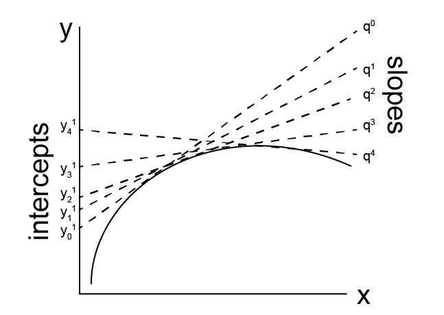

Legendre transforms#
Additional Readings for the Enthusiast#
Tester and Modell [4], Ch. 5.1, 5.2, 5.6
Goals for Today’s Lecture#
How does the fundamental relation define the equilibrium state through only two variables?
Is energy minimized or maximized at equilibrium?
How can we use Legendre transforms to modify the fundamental relation to determine our equation of state in terms of new variables?
The Fundamental Relation#
In the last lecture, we derived the entropy and then used this to define the combined first and second law of thermodynamics, which we wrote as:
Integrating this expression would fully specify the internal energy as:
We also saw that we could specify \(T\) and \(P\) as derivatives of the internal energy that are themselves functions of \(\underline{S}\) and \(\underline{V}\), allowing us to write:
In other words, the temperature and pressure are also functions of the same variables, but the functions \(f_2\) and \(f_3\) are unknown. These unknown functions are known as equations of state because knowing them would fully specify the state of an equilibrium system by determining the equation for \(\underline{U}(\underline{S}, \underline{V})\). Connecting back to Postulate 1, we see that there are exactly 2 independently variable parameters (\(\underline{S}\) and \(\underline{V}\)) that specify the equilibrium state of this system.
We can visualize the meaning of the functions \(f_1\), \(f_2\), and \(f_3\) by imagining a 3D surface in a coordinate system in which the parameters \(\underline{U}\), \(\underline{S}\), and \(\underline{V}\) are coordinate axes. Since these three variables are related by (30), each point on this surface represents a possible equilibrium state of the system. Since all states are equilibrium states, any two states can be linked by a quasi-static process along the surface.
We can calculate values of \(T\) and \(P\) for specific states by finding the family of tangent lines to this surface, representing partial derivatives (projected along particular axes since in each case the orthogonal variable is held constant). Fully specifying (30) thus means fully specifying this surface for a given system; we need to know the tangent lines at every point (i.e. \(f_2\) and \(f_3\)) as well as the shape of the surface (\(f_1\)).
As an example, we can calculate a closed form expression for the entropy of an ideal gas, knowing its equation of state, and evaluate individual equations of state for \(T\) and \(P\) as well.
Write the fundamental relation in the entropy representation
\(d\underline{S} = \frac{1}{T} d\underline{U} + \frac{P}{T}d\underline{V}\)
Make intensive and substitute \(U =3/2 RT\) and \(PV = RT\)
\( dS = \frac{3R}{2{U}}d{U} + \frac{R}{{V}} d{V}\)
Integrate from a reference state with \(U_0\), \(V_0\), \(S_0\).
\[\begin{split}\begin{aligned} S-S_0 &= \frac{3R}{2} \ln \left ( \frac{U}{U_0} \right ) + R \ln \left ( \frac{V}{V_0} \right ) \\ S &= S_0 + R \ln \left [\left ( \frac{U}{U_0} \right )^{3/2} \left ( \frac{V}{V_0} \right ) \right ] \\ \underline{S} &= NS_0 + NR \ln \left [\left ( \frac{U}{U_0} \right )^{3/2} \left ( \frac{V}{V_0} \right ) \right ] \end{aligned}\end{split}\]
Here, we define \(S = \frac{\underline{S}}{N}\), \(E = \frac{\underline{U}}{N}\), and \(V = \frac{\underline{V}}{N}\) to indicate the quantity per mole that is intensive. The second-to-last line fully specifies equilibrium states of the system and represents the 3D surface in \(U\), \(S\), and \(V\) space defined earlier; each point in that space satisfies this expression. The last line is a restatement of the same space with an extensive entropy. Now, we can find expressions for \(T\), \(U\), and \(P\) as well by rearranging the expression for the entropy and then taking appropriate derivatives:
Thus, we have a complete equation defining all equilibrium states of our system in terms of only two parameters - \(S\) and \({V}\) - and we have equations of state for the various intensive variables needed to fully specify our system. As a check, we indeed show that we regained the same equations of state that we originally specified.
We can end this section by generalizing the expressions above to multicomponent open systems.
As a reminder from earlier in the course, the first expression is referred to as the fundamental representation in the energy representation while the second is in the entropy representation; both are equivalent, and choosing one or the other for solving a problem is purely for mathematical convenience. Each expression defines a hypersurface in \(n+3\) dimensions analogous to the 3D surface described above, with all states on that surface representing equilibrium states connected by quasi-static processes. The \(n+2\) first-order partial derivatives of the Fundamental Equation correspond to tangent lines to this surface and define equations of states for intensive parameters. According to Postulate 1, only two of these independently variable properties (plus the masses of all \(n\) components) are necessary to specify the entire system; we will later show that this is the case even for systems with \(n+3\) variables. Finally, for book-keeping purposes, we can also write these in differential form by comparison to the combined first and second laws of thermodynamics to help identify the relevant partial derivatives:
In these last expressions we define a new term, the chemical potential, which we use for open systems and define as:
The chemical potential of component \(i\) is thus the intensive variable conjugate to the amount of component \(i\) in the system.
Behavior of the energy at equilibrium#
In the last lecture, we found that for an isolated system held at constant \(\underline{U}\), \(\underline{V}\), and \(N\), the entropy of the system reaches a maximum at equilibrium. This finding presented us with the first example of a thermodynamic potential - that is, a derived parameter that is a state function - that can tell us if a system is at equilibrium.
We have now defined two equivalent fundamental relations that describe all of the properties (and thus the state) of a system - the entropy representation (a function of \(\underline{U}\), \(\underline{V}\), and \(N\)) and energy representation (a function of \(\underline{S}\), \(\underline{V}\), and \(N\)). Given this correspondence, then, we might suspect that there is an equivalent description of equilibrium in an isolated system based on analyzing the internal energy of the system as opposed to the entropy.
Let us consider a system that at constant \(\underline{S}\), \(\underline{V}\), and \(N\) that is naturally described in the energy representation rather than entropy representation. For an isolated system the entropy is maximized, so here we ask what condition is fulfilled by the energy for the same system. We know that any perturbation to the system would necessarily decrease its entropy since it is at a maximum; all perturbations hence will decrease the entropy from \(\underline{S}_0\) to \(\underline{S}_1\). Thus, we can imagine the following process:
We start with a system held at constant \(\underline{S}_0, \underline{V}, N\) with energy \(\underline{U}_0\).
We isolate the system to maintain constant \(\underline{U}_0\) and apply a small perturbation so that the entropy changes to \(\underline{S}_1\), such that \(\underline{S}_1 - \underline{S}_0 < 0\).
We now allow the system to interact reversibly with an external heat reservoir to return the entropy to its original value of \(\underline{S}_0\) while changing the energy to \(\underline{U}_1\).
In general such perturbations may not be physically achievable so we treat this as a thought experiment. An example perturbation that would decrease the entropy of the system at fixed energy would be confining an ideal gas to a subset of its volume in a container, thus decreasing its entropy at constant energy and constant volume (of the entire container). Again, we only need to be able to imagine such perturbations rather than actually perform them. For this process, \(\underline{S}_1 - \underline{S}_0 < 0\) during the perturbation. During the reversible process that reverts the system back to \(\underline{S}_0\), we can define:
This indicates that returning the system to its original entropy requires a transfer of heat from the reservoir into the system, increasing the energy such that \(\underline{U}_1 - \underline{U}_0 > 0\). Thus, reverting the system back to its initial entropy necessarily increases the energy of the system from its initial equilibrium state, or in other words the energy was previously at a minimum. We can then conclude that for any equilibrium state held at constant \(\underline{S}, \underline{V}, N\), any variation in the system will increase the energy, and the energy of a system at constant \(\underline{S}, \underline{V}, N\) is minimized at equilibrium.
Legendre transform#
The previous example shows that we can define multiple conditions for an equilibrium state based on the thermodynamic parameters that define the fundamental equation for the system. So far, we identified two conditions of equilibrium - specifically that the entropy is maximized in a system with constant \(\underline{U}, \underline{V}, N\) as independent parameters and the energy is minimized in a system with constant \(\underline{S}, \underline{V}, N\) as independent parameters. In general, it would be useful to obtain conditions on equilibrium for systems characterized by different, possibly more convenient independent parameters. For a single-phase system, it is always the case that a property such as the energy can be expressed in terms of \(n+2\) other properties, where \(n\) is the number of components in the system (we will show this in a future lecture). Thus, our goal in this lecture is to show how we can construct a function with the same information content as the fundamental relation but with independent variables that are more experimentally accessible, then determine the behavior of this function at equilibrium. To do so, we will first introduce a mathematical operation referred to as the Legendre transformation.
The Legendre transform, while somewhat complicated notationally to prove and apply, is based on a relatively straightforward concept. Consider a line, which can be described as a series of points in the \(x, y\) plane. Each point is thus defined by two parameters - its \(x\) position and its \(y\) position. We could also draw a series of tangent lines to our line of interest, where each tangent line intersects the line at a particular point. Each tangent line is also a function of two parameters its slope, \(q\), and its intercept with the y-axis, \(y^{(1)}\). Thus, we can imagine describing our line of interest in two equivalent ways: either as a set of points with given \(x\) and \(y\) values, or the locus of points defined as the intersection of a family of tangent lines, each of which is specified by \(q\) and \(y^{(1)}\). Switching between these two equivalent representations, which have the same information content (i.e. they describe the same line) and require the same number of parameters, is the goal of a Legendre transform. Recall that we can write the combined first and second law as:
In this representation, it is clear that the intensive variables in the fundamental relation represent the slope of tangent lines to \(\underline{U}\) (as discussed in the previous lecture). Transforming the equation to use these slopes as independent variables while maintaining the same information content as the fundamental relation is our goal.

We will start by defining a function \(y^{(0)} = f(x)\) as a function of a single independent variable, although this process will generalize to many independent variables as well. We assume that \(y^{(0)}\) is a well-behaved, continuous function. At point \(x\), we define a tangent line to \(f(x)\) with the slope of the tangent line given as \(q = dy^{(0)}/dx\) and the intercept as \(y^{(1)}\) such that:
We can define such a tangent line for each value of \(x\). If we know \(q\) and \(y^{(1)}\) for each value of \(x\), we can then reconstruct the function \(f(x)\). Solving for \(y^{(1)}\) yields:
and thus the slope of the tangent line for \(y^{(1)}\) vs \(q\) is given as:
and an intercept equal to \(y^{(0)}\). \(y^{(1)}\) is the Legendre transform of \(y^{(0)}\) - the function \(f(x)\) is now transformed to \(f(q)\), and we can reproduce the same set of points described by \(f(x)\) with the set of points described by \(f(q)\) so that these functions have the same information content (they specify the same line). We use the superscript (1) to indicate a single independent variable has been replaced with its original tangent line slope, \(q\).
We can generalize this relationship to multiple variables, then show the application to thermodynamic potentials. Consider now the function:
There are \(m\) independent variables and thus \(m\) first-order partial derivatives of \(y^{(0)}\). Defining each derivative as \(q_i\), we can write:
This notation indicates that all \(m-1\) variables except for \(x_i\) are held constant. We can imagine varying \(y^{(0)}\) by changing \(x_i\) with all other variables fixed to define a series of tangent lines at each point of the surface. These tangent lines are all defined in terms of only \(y^{(0)}\) and \(x_i\), so we could describe this as the envelope of tangent lines in the \(y^{(0)} -x_i\) plane, reducing the problem to the same single-variable system derived above. The corresponding exact differential of \(y^{(0)}\) is then:
Now imagine we transform our space with respect to \(x_1\), where \(y^{(1)}\) is the intercept of the tangent line corresponding to \(q_1\), then we have:
This function is the first Legendre transform of \(y^{(0)}\) with respect to \(x_1\). In particular, one independent variable (\(x_1\)) has been replaced by its slope (\(q_1\)); we could continue to transform other independent variables as well. Defining a more general case we can write the \(k\)th Legendre transform as:
The key here is that we are inverting the relationship between the variables \(x_i\) and \(q_i\). These pairs of variables are referred to as conjugate pairs. Since \(q_i = \left ( \frac{\partial y^{(0)}}{\partial x_i} \right )_{x_1, x_2, \dots, [x_i], \dots, x_m}\) is a function of the entire set of \(m\) variables, we can also write the total differential of \(y^{(k)}\) as:
Here we have substituted in the exact differential of \(y^{(0)}\) and we assume that \(k < m\); in other words, not all variables are necessarily transformed. We can thus summarize this generalized transformation (32) by showing that for the \(k\) variables that have been transformed, we can write:
For the rest of the \(m-k\) variables we can write:
Note that neither of these relations has a \(k\) dependence.
Legendre transforms of the Fundamental Relation#
Having now shown this general form - how is this useful? Let’s first consider the fundamental relation in the energy representation:
Comparing this expression with the forms of the Legendre transformed expressions, we can see several features - namely, we again identify conjugate pairs of variables consisting of an independent variable (e.g. \(\underline{S}\)) and derivative of the energy (e.g. \(T\)), corresponding to \(x_i\) and \(q_i\). Thus, for each pair of these variables, we can perform a Legendre transform to obtain a potential that is a function of either of the two variables in this conjugate pair. Note that here we have defined the chemical potential as \(\mu_i \equiv \left ( \frac{\partial \underline{U}}{\partial {N_i}}\right )_{\underline{S}, \underline{V}, N_1, \dots, [N_i], \dots,N_n}\).
As an example, let us consider performing a Legendre transform of the energy to obtain a potential which is a function of \(T\) and \(P\) instead of \(S\) and \(V\). We begin by equating the untransformed equation, \(y^{(0)}\), to the energy (i.e. the fundamental relation):
We want to transform this expression such that two variables are replaced by their conjugates; we thus seek \(y^{(2)}\):
Now using (31), we can write:
Thus, using the Legendre transform and suitable identification of conjugate pairs, we arrive at an expression for the Gibbs free energy, \(G\). We can similarly write a total differential for this expression using (32)
We could also get this same result by differentiating the expression for \(G\) directly and substituting in the total differential of the fundamental relation:
Hence we get the desired expression. In practice, we can shorten this rather lengthy example using the following set of steps (applied to the same set of variables):
Identify the set of independent variables with which you wish to characterize a system (e.g., \(T, P, N_1, N_2\)).
Identify the variables conjugate to the independent variables in the fundamental relation (e.g., \(\underline{S}, \underline{V}, \mu_1, \mu_2\) in the energy representation). Note that now we see why conjugate pairs always appear in these potentials.
Identify the variables that need to be transformed to yield the desired new set of independent variables (e.g. \(\underline{S}\rightarrow T\) and \(\underline{V}\rightarrow P\)).
Subtract the conjugate pair from the reference potential for each variable that is to be transformed (e.g. \(\underline{G} = \underline{U}-T\underline{S}+P\underline{V}\))
Take the total differential of the result if needed (e.g., \(d\underline{G}\)).
In practice, then, for most purposes we need to know the form of the fundamental relation and the identity of conjugate pairs; from there, it is fairly straightforward to perform Legendre transformations. As a second example, let’s assume we want an equation with the information content of the fundamental relation but as a function of the independent variables \(T, \underline{V}, N\). Following the steps above, we recognize that \(\underline{S}, -P\) and \(\mu\) are conjugate to the independent variable, but starting from the fundamental relation only \(\underline{S}\) needs to be transformed. Hence we can write:
This is the expression for the Helmholtz free energy. Again, the key point here is that no information is lost in transforming the fundamental relation (in either the entropy or energy representation) - the transformation is simply a manipulation of which variables are independent and we are able to describe the same hyperdimensional surface that is specified by the original, untransformed fundamental relation. Keep in mind that this is very similar to what we discussed in our earlier lecture.